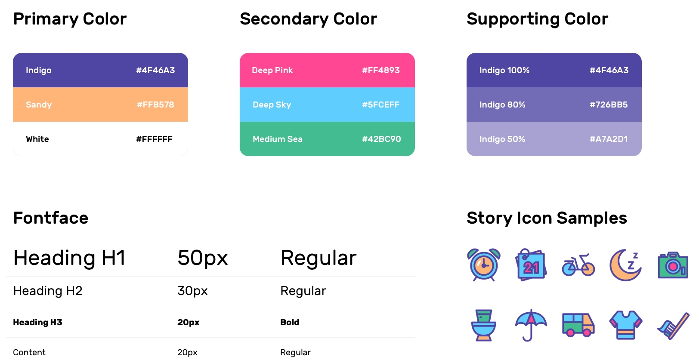

Faye Gong
I joined in Gaia in Dec, 2018 as Product Design Lead.
And this Social Sotry APP is the second product we are going to launch for Autism Spectrum Disorder community.
Overview
PROJECT TYPE
Start-up
Real Work
TOOLS
Paper
Sketch
Principle
TEAM
Brent Chase
(CEO & PM)
MY WORK
Research
Design
Test
Who are we?
Gaia's mission is to create wearable smart apparel and an app system that monitors biometrics that are indicative of stress, wireless transmitting data to our associated app for early detection and notification of meltdowns. Now when a meltdown occurs, an alert is sent to the child's parent and any other caregivers as well as Alec of the the impending event.
Project Brief
The Challenge
How to digitalize a daily experience for autistic's caregivers?
Current autistic's caregivers are using Social stories training to practice communication skills.
Although the prescribed format was meant for high functioning people with basic communication skills, the format was adapted substantially to suit individuals with poor communication skills and low-level functioning (e.g., children who are struggling with understanding social situations or when coping with change.
The Problem

Social Stories Training takes many efforts from caregivers by un-standardized training methods.
The current methods are paper cards or poorly-designed mobile apps that are both inconvenient for training on an hourly base, not durable to use, and not easy to be updated. So caregivers are compromising their time and energy into the training process.
The Solution

A Mobile Experience for autistic kids to practice their social skills
Gaia is trying to build a digital online service for Social Story Training to bridge the communication gap easier and get rid of the guesswork and paperwork while practicing.
Moreover, it is easier to track progress and assess whether the concept would have been successful by records.
The style of the app is unique and well-designed by using comparative and lively colors, customized icons, and slick and swift interactions to help kids build habits based on their schedule and ultimately do the practicing by themselves.

Process

Understand
Design Research
How to dig deeper to find the real user's problem?
Our PM and I did several filed trips and in-person interviews from December to March to discover user's needs and current pain points.

Questions we answered
Target Users
1. Who is going to use the product?
There are two main stakeholders emerged in research, kids who have autism, and their caregivers.
Persona | Kid, caregiver, and their typical day

Insight #1
Social Stories Training is valuable, but currently costs a lot of caregiver's efforts in their daily life by managing cards, dependent relationship while practicing.
Academic Research and User's Concerns
2. Does technology help Social Stories Training proces or not?
Some parents may have concerns that technology would disturb the training process or distract kids when practicing.
Based on our academic research, technology can make the performance of remembering and recalling pictures, scripts, and story more compelling.
Insight #2
Technology involvement and digital methods won't disturb or distract kids' learning process, but help to standardize the process, which cost less learning efforts and benefit the performance of training.
Competitive Analysis
3. How is the current competition in the market?
Autistic caregivers are using printed paper cards or mobile apps to construct their kid's training plan, to practice social habits and communication skills.
Paper cards are not durable, since
1. Cards are not easy to manage and store.
2. If they lose one card, the story would be less consistent.
3. When caregivers bought several sets of cards, they would have many repetitive meaning cards.
In the digital market, fewer competitors focus on providing friendly and useful product design. Moreover, it's critical to make a well-designed user interface for autism kids because of their sensitivity and unstableness.
In the IOS APP Store, when searching Social Story(stories),
1. There are less than 5 results showed up, which mostly cost more than $10.
2. Their interfaces are basic, and the content is highly standardized, just like a copy from books and other online sources.

Insight #3
There is a significant design opportunity area since most well-known competitors have poorly-designed product interface and interaction.
Generate Concept
Ideation
"
HMW design a friendly interface for daily based social stories practice for autism kids?
"
What should it include?
Design Requirments + Design Principles

The solution should have (1) lively user-app interaction, (2) customizable schedule function, (3) low learning cost/study, (4) and allow for various levels of comfort with unfamiliar touch.
Information Architecture

Design
#1 Practice
Social Stories and Exercise
Target User and Scenario

User Flow 1
Practice with a real schedule and get reward points

When at the activity time caregiver set, kids could see the [Currently On-going Activity] is active and tap it jump to [Story Page] to finish the corresponding stories.
After completed all the stories, kids earn points and could go back to the homepage.
Before the set time, when kids could only see the time of next activity on the top of the page, and it shows the time of it. But it is not tappable until the time.
Layout and Style 1
Activity Cards and List Design

At this point, the two columns design is not useful and clear as the one column since it's harder for kids to recognized and left/right layout. And the one column is more intuitive for time order schedule.
And our strategy was going to provide some well-defined icons and also allow caregivers to upload icons or photos from their phones. So make the full image as the background has less expandability.
To arrange the layout of icon, time, points, and name of the activity, I chose to finalize the design as left picture and right description layout, which is familiar and easy to understand. Thus when mingling our icons and customized photos, there won't be a mess-up.
Our goal is to use the icons to form memory and practice scripts, so I decreased the importance of activity name.
Homepage Design

Layout and style 2
Stories cards and list design

The story cards also apply the left-right layout without the name of the story since it not remembering both name and order would be difficult for kids.
And the checkmark is very important in this scenario since it could give kids an indicator whether the story has been completed or not.
Social Stories Design

User flow 2
Excersice

When kids tap the exercises collection, it jumps to the exercises list page. Take video-modeling as an example. When kids complete it, kid earns the points and back to the homepage. And the total points cut down.
#2 Stories and exercises management
Let's meet another persona!

User flow 3
Management
By entering the password, caregivers could create typical stories, activities, and add exercises for their kids. And the calendar allows them to view, edit, delete activity.
Calendar and Management

Final User Flow

Guidelines
Visual System
Design
Final Solution


All Rights Reserved 2016-2019 @fayegong.design